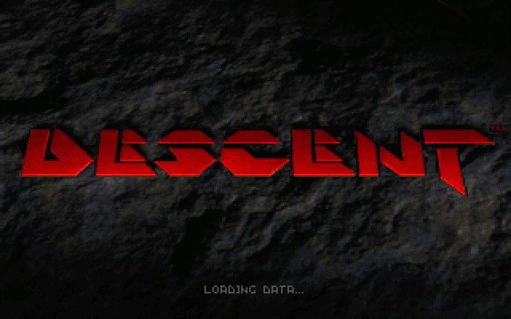

**warpcore.org**
At the core of classic gaming and development since 1997[^established]
Hey folks, we're back after a long hiatus. Excuse the stray pixels here and
there while we get things up and running. From time to time, we hope to share
with you bits and pieces from our collection of wonders and oddities to pique
your interest and amuse you.
Games
==============================================================
Descent
--------------------------------------------------------------
[Descent][descentwiki] is a true 3-D, [six degrees of freedom][6dof] game
developed by [Parallax Software](https://www.dsvolition.com) and released by
[Interplay](https://interplay.com) in 1995.
 While
[Doom](index.md.html#doom) introduced the world to rip and tear, through a
first-person, action 3-D shooter--one game was the first to add a whole new
dimension to 3-D worlds: Descent. No fireballs, giblet piles, or lurking demonic
beings here -- just dark, twisting mines filled with mining robots gone mad.
What's a person to do? Hire a mercenary of course: you, the Material Defender.
No up or down, Descent whips you about in a labyrinthine environment with free
range of movement on every axis. Plunge through mines, blast your way through
virus-infected robots, and try to avoid vertigo at every turn. Your author was
lost in the mines well before taking a trip to Phobos, and it's a trip not soon
forgotten.
1995 was a long time ago, but fear not Material Defender, if you want to get lost
in the mines too, there's still hope, Descent's still available from the fine
folks at [gog.com](https://www.gog.com/game/descent). However, if your Pyro-GX
got chucked into the nearest star, don't worry, Descent lives on through its
true spiritual successor in the form of [Overload](https://playoverload.com/).
Easy money, right?

### Community
Looking for friends, stories, and more? You'll find them here:
* https://www.descentbb.net/
* https://www.descentbb.com/
* https://www.gog.com/forum/descent_series
* https://sectorgame.com/forums/viewforum.php?f=18
### Levels
Hungry for some action? Ready to test your mad skills? Visit one of these fine
purveyors of levels:
* https://www.enspiar.com/dmdb/
* https://archive.org/details/DescentLevels
* http://pooterman.com/
* https://sectorgame.com/d3/
[^established]: At least, in some parallel universe.
[6dof]: https://en.wikipedia.org/wiki/Six_degrees_of_freedom
[descentwiki]: https://en.wikipedia.org/wiki/Descent_(1995_video_game)